| 4. 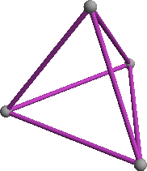 r2 = 1 Trivial. (regular tetrahedron) | 5. 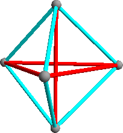 r2 = 12/7 = 1.714+ Found by David Cantrell in March 2009. (3-fold rotational symmetry) | 6. 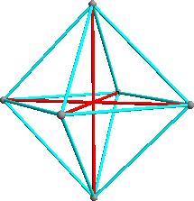 r2 = 2 Found by David Cantrell in March 2009. (regular octahedron) |
| 7. 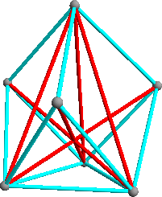 r2 = 2.293+ Found by David Cantrell in March 2009. (3-fold rotational symmetry) | 8. 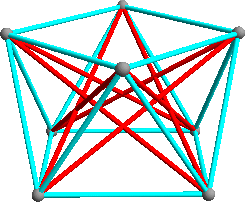 r2 = 1 + √2 = 2.414+ Found by David Cantrell in March 2009. (square antiprism) | 9. 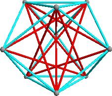 r2 = (9 + √129) / 8 = 2.544+ Found by David Cantrell in March 2009. (3-fold rotational symmetry) |
| 10. 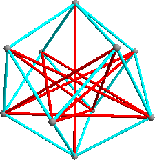 r2 = 3.101+ Found by David Cantrell in March 2009. (4-fold rotational symmetry) | 11. 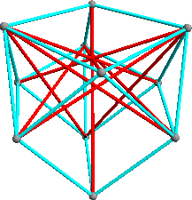 r2 = 3.384+ Found by David Cantrell in March 2009. (3-fold rotational symmetry) | 12. 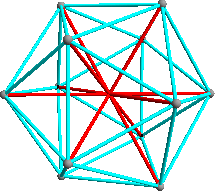 r2 = (5 + √5)/2 = 3.618+ Found by David Cantrell in March 2009. (regular icosahedron) |
| 13. 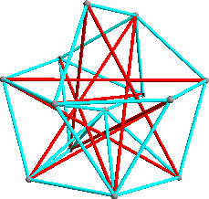 r2 = 3.947+ Found by David Cantrell in March 2009. (asymmetric) | 14. 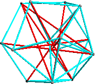 r2 = 4.168+ Found by David Cantrell in March 2009. (asymmetric) | 15. 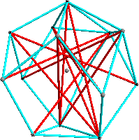 r2 = 4.398+ Found by David Cantrell in March 2009. |
| 16. 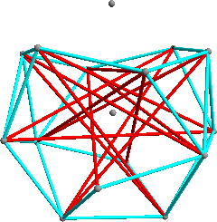 r2 = 4.553+ Found by David Cantrell in March 2009. (2-fold rotational symmetry) | 17. 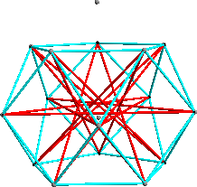 r2 = 4.771+ Found by David Cantrell in March 2009. (5-fold rotational symmetry) | 18. 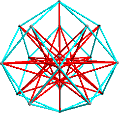 r2 = 5.047+ Found by David Cantrell in March 2009. (5-fold rotational symmetry) |
| 19. 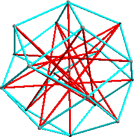 r2 = 5.409+ Found by David Cantrell in March 2009. (4-fold rotational symmetry) | 20. 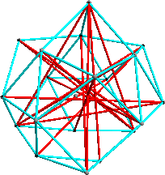 r2 = 5.799+ Found by David Cantrell in March 2009. (asymmetric) | 21. 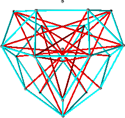 r2 = 5.985+ Found by David Cantrell in March 2009. (2-fold rotational symmetry) |